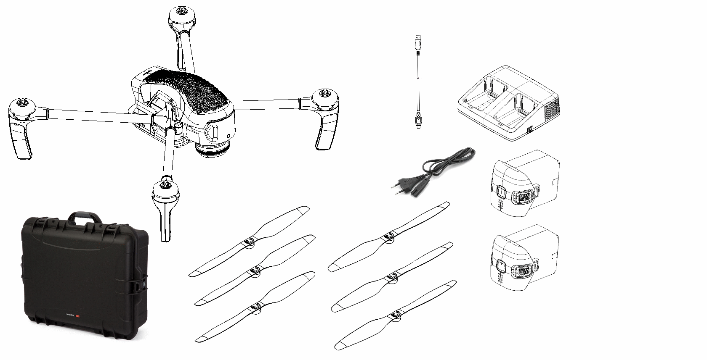

Руководство пользователя Геоскан Gemini¶
{kind=link}
Общие сведения¶
Геоскан Gemini – это беспилотный аэрофотосъемочный комплекс на базе квадрокоптера. Он предназначен для получения высококачественных геопривязанных фотографий местности и отдельных объектов.
Комплект поставки¶
- Квадрокоптер в сборе;
- Воздушные винты – 3 пары;
- Аккумуляторная батарея (АКБ) – 2 шт.;
- Зарядное устройство (ЗУ);
- Кабель питания ЗУ;
- Наземная станция управления;
- Транспортировочный контейнер;
- USB-кабель.
Технические характеристики¶
БВС
| Тип БВС | квадрокоптер |
| Степень защиты | IP43 |
| Масса | 1,8 кг |
| Габариты | 758×724×200 мм |
| Моторы | бесколлекторные |
| Продолжительность полета | 40 мин * |
| Воздушная скорость | вертикальная до 5 м/с |
| горизонтальная до 15 м/с | |
| Высота полета | до 500 м |
| Рабочая высота полета | 30 — 200 м |
| Размеры взлётно-посадочной площадки | не менее 2×2 м |
| Допустимая скорость ветра | 10 м/с |
| Рабочий диапазон температур | от −15 до +40 °C |
* - при высоте 120 м и ветре 2 м/с
Фотокамера
| Разрешение | 5456 x 3632 (20,1 Мпикс) |
| Размер матрицы | APS-C (23,2 × 15,4 мм) |
| Тип затвора | шторный |
| Объектив | 20 мм, F2,8 |
| Диапазон ISO | 100 — 16000 |
| Выдержка | 1/4000 – 30 c |
| Формат снимков | JPEG |
Приемник ГНСС (Topcon )
| Количество каналов | 226 |
| Поддерживаемые частоты: | |
| GPS | L1/L2 |
| ГЛОНАСС | L1/L2 |
| BeiDou | B1/B2 |
| Ошибка определения координат центра фаз | не более 1,5 см |
| антенны относительно базовой станции |
Аккумуляторная батарея
| Тип аккумулятора | литий-ионный 6S |
| Напряжение | 22,2 В |
| Емкость | 6000 мА•ч |
| Энергия | 99,9 Вт•ч |
| Масса | 600 г |
| Рабочий диапазон температур | от ˗15 до +40 °C |
| Диапазон температур при зарядке | от 0 до +40 °C |
Радиосвязь (НСУ — БВС)
| Тип связи | временной дуплекс |
| Частота | 868,7 - 869,2 МГц |
| Мощность | до 100 мВт |
| Пропускная способность | до 500 кбит/с |
| Задержка в канале | не более 20 мс |
Фотограмметрическая модель
| Абсолютная точность фотограмметрической | 3 — 4 см |
| модели при разрешении снимков 2,5 см | |
| Наземное разрешение | (H/48) см/пиксель, где H – высота полета в метрах |
| Эффективность получения данных | Макс. площадь съемки – около 1 кв. км за один полет |
Зарядное устройство
| Входное напряжение, AC | 200 — 240 В, 50 Гц |
| Количество одновременно заряжаемых АКБ | 1 |
| Количество одновременно установленных АКБ | 2 |
| Время заряда одной АКБ (до 90% емкости) | 1 час |
| Диапазон рабочих температур | от 0 до +40 °C |
Транспортировочный контейнер
| Габариты | 63 × 505 × 224 мм |
| Масса | 4,8 кг |
| Степень защиты | IP67 |
Обслуживание¶
После каждого полета осматривайте БВС на предмет повреждений.
При повреждении лопастей винтов вы можете заменить их самостоятельно, используя запасные части и инструменты из комплекта.
При выявлении конструкционных повреждений рамных частей БВС или систем необходимо обратиться в службу технической поддержки.
После выполнения 80 полетов рекомендуется отправить БВС на завод-изготовитель для проверки и технического обслуживания.
Хранение¶
Комплекс Геоскан Gemini (без аккумуляторных батарей) и зарядное устройство рекомендуется хранить в транспортировочных кейсах в сухом помещении при температуре от 5 до 25 °С и относительной влажности не более 85%, без конденсации. Срок хранения - 2 года.
Аккумуляторные батареи хранить в сухом прохладном месте, исключающем воздействие прямых солнечных лучей, при температуре от 5 до 25 °С и относительной влажности не более 80%. Срок хранения - 1 год.
Внимание
Для хранения аккумуляторных батарей переведите их в состояние “Storage” с помощью зарядного устройства. Подробнее в разделе Зарядная станция и АКБ.